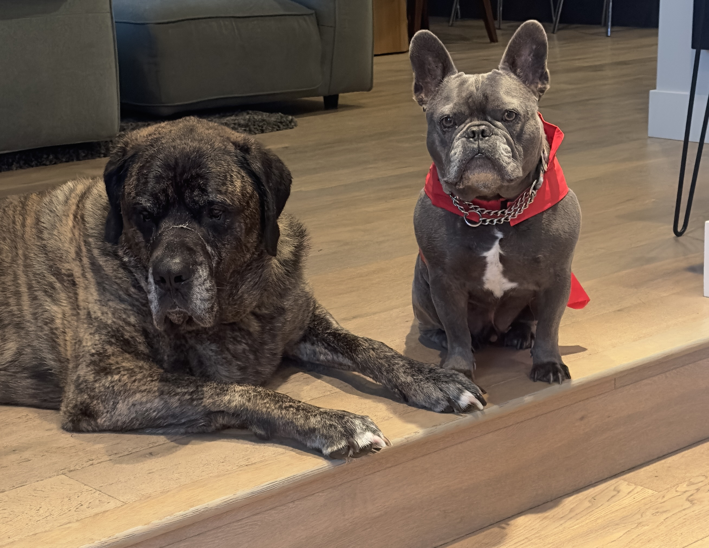

09 - DICTIONARIES
Study Guide for Python Programming: Unit on Dictionaries

Here is a Dictionary of dog emotions:
{“Boris”: “mild confusion”, “Bert”: “cape fueled rage”}
List Syntax
Boris made a summary of the syntax for each of the Python dictionary functions in the study guide:
keys()- Returns a view object displaying a list of all the keys in the dictionary.
- Syntax:
dictionary.keys()
values()- Returns a view object containing a list of all the values in the dictionary.
- Syntax:
dictionary.values()
get()- Returns the value for the specified key if the key is in the dictionary.
- Syntax:
dictionary.get(key, default) - The
defaultparameter is optional and provides a value to return if the key is not found. If not provided, it defaults toNone.
Key Concepts
Basic Concepts of Dictionaries
- Key-Value Pairs: Dictionaries store data as key-value pairs.
- Mutability: Python dictionaries are mutable, meaning their values can be changed after creation.
- Accessing Values: Values in a dictionary are accessed via keys, not indices (e.g.,
dict[key]).
Basic Dictionary Operations
- Creating a Dictionary: Dictionaries are created with curly braces
{}or thedict()constructor. - Updating Values: Change the value of an item by referencing its key (e.g.,
dict[key] = new_value). - Handling
KeyError: Occurs when a key is not found in the dictionary.
Dictionary Methods
- Useful Methods:
get(),keys(),values(),delfor deleting a key. - Handling
KeyErrorwithget(): Avoids an error by returningNoneif the key is not found.
Lists vs. Dictionaries
- When to Use: Lists are for collections of similar items; dictionaries are for storing records with different types of information.
Lists of Dictionaries
- Representing Complex Data Structures: Useful for storing multiple records (e.g., a list of student records).
- Accessing Data: Chaining indices and keys (e.g.,
students[0]['Name']).
JSON and Dictionaries
- JSON: A standard format for data interchange, closely resembling Python dictionaries.
- Serializing and Deserializing: Converting between JSON strings and Python dictionaries.
- Python’s
jsonModule: Used for loading and saving dictionaries to and from JSON.
Practice Questions
What is the value returned by
font.get('Size')iffontis a dictionary defined asfont = {'Name': 'Arial'}?- A.
None - B.
KeyError - C.
0 - D.
'Arial'
- A.
What does the following code do?
x['new_key'] = 'new_value'assumingxis a dictionary?- A. Throws an error because ‘new_key’ does not exist.
- B. Adds a new key-value pair to the dictionary.
- C. Changes the value of an existing key.
- D. Does nothing to the dictionary.
If
student = {'Name': 'John', 'Age': 21}, what willstudent['Age'] = 22do?- A. Adds a new key ‘Age’ with the value 22.
- B. Changes the value of the ‘Age’ key to 22.
- C. Throws a KeyError.
- D. Creates a new dictionary with ‘Age’ set to 22.
In the context of dictionaries, what does the
delkeyword do?- A. Deletes the entire dictionary.
- B. Deletes a specified key-value pair.
- C. Deletes the value of a specified key.
- D. Clears all values leaving an empty dictionary.
What is the result of
len(s)wheres = [{'a': 1}, {'b': 2}, {'c': 3}]?- A.
3 - B.
6 - C.
2 - D.
9
- A.
What is the output of the following code?
x = {'a': 5, 'b': {'c': 2, 'd': 4}} print(x['b']['d'])A.
5B.{'c': 2, 'd': 4}C.2D.4What is the output of the following code?
x = {'a': [1, 2], 'b': [3, 4]} x['a'].append(3) print(x['a'])A.
[1, 2]B.[1, 2, 3]C.[3, 4, 3]D.KeyErrorWhat is the output of the following code?
x = {'a': 'hello', 'b': 'world'} print('a' in x)A.
TrueB.FalseC.'hello'D.KeyErrorWhat happens when the following code is executed?
x = {'a': 1, 'b': 2} del x['a'] print(x)A.
{'a': 1}B.{'b': 2}C.{1, 2}D.KeyErrorWhat is the result of the following code?
x = {'a': [1, 2, 3], 'b': [4, 5, 6]} print(len(x))A.
2B.3C.6D.KeyError
Correct Answers and Explanations
- Answer: A.
None- Explanation: The
get()method returnsNoneif the key is not found in the dictionary.
- Explanation: The
- Answer: B. Adds a new key-value pair to the dictionary.
- Explanation: If the key does not exist, it adds the key-value pair to the dictionary.
- Answer: B. Changes the value of the ‘Age’ key to 22.
- Explanation: Since the ‘Age’ key exists, it updates its value to 22.
- Answer: B. Deletes a specified key-value pair.
- Explanation: The
delkeyword removes a specific key-value pair from a dictionary.
- Explanation: The
- Answer: A.
3- Explanation: The
len()function returns the number of items (dictionaries in this case) in the lists, which is 3.
- Explanation: The
- Answer: D.
4- Explanation: The code retrieves the value of key ‘d’ within the nested dictionary associated with key ‘b’.
- Answer: B.
[1, 2, 3]- Explanation: The
append()method adds the element3to the list associated with key ‘a’.
- Explanation: The
- Answer: A.
True- Explanation: The
inoperator checks if ‘a’ is a key in the dictionaryx, which it is.
- Explanation: The
- Answer: B.
{'b': 2}- Explanation: The
delstatement removes the key ‘a’ and its value from the dictionary, leaving only{'b': 2}.
- Explanation: The
- Answer: A.
2- Explanation: The
len()function returns the number of key-value pairs in the dictionaryx, which is 2.
- Explanation: The